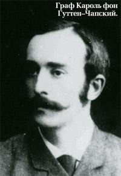
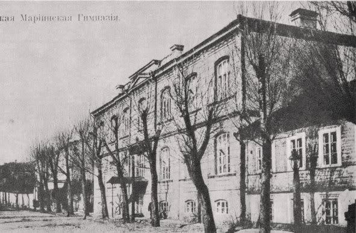
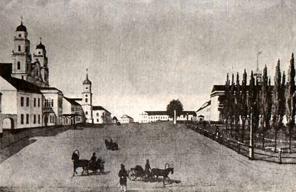
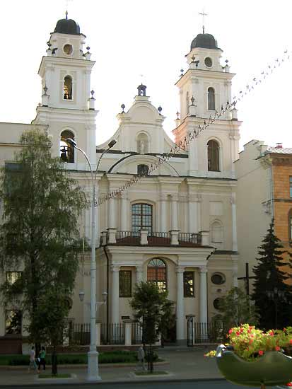

Караль Ян Аляксандр Гуттэн-Чапскі (15 жніўня 1860-1904) – гарадскі
галава Мінска з 1890 па 1901 годы, за час свайго знаходжання на пасадзе
дамогся таго, каб Мінск ператварыўся ў сапраўдны еўрапейскі горад. Газета
«Голос Провинции» пісала ў 1906 годзе: «Паслужы граф яшчэ пару год – і
Мінск стаў бы Парыжам». І сапраўды, для такога меркавання былі пэўныя
падставы.
У перыяд з 1890 па 1901 гады горад завяршыў будаўніцтва тэатра,
займеў публічную бібліятэку. Гараджане пачалі карыстацца тэлефонам,
электрычнасцю, каналізацыяй. Пачалося санітарнае аздараўленне горада:
адкрыліся гарадская бясплатная амбулаторыя, радзільны прытулак, гарадскі
санітарны камітэт, праведзены супрацьхалерныя мерапрыемствы, заснаваны
аналітычная станцыя і дэзінфекцыйная камера, з’явіўся шпіталь для
прастытутак, заснаваны начны прытулак для бамжоў. Пачало працаваць
Гарадское таварыства аматараў спорта. У губернатарскім садзе пабудаваны
велатрэк, стадыён і комплекс спартыўных збудаванняў. Адкрыты Жаночыя
Марыінская і ўрадавая гімназіі, 2-я і 3-я прыходскія вучэльні, вучылішча для
сляпых, рамесная вучэльня. Забрукаваны галоўныя вуліцы і Ракаўская шаша.
Аддзінаццаць гадоў кіравання К. Чапскага Мінскам ператварылі
невялікі правінцыйны горад ў горад еўрапейскага тыпу.
Наш турыстычна-пазнавальны маршрут праходзіць па сучаснай вуліцы
К. Маркса, якая ў канцы ХІХ стагоддзя называлася Падгорнай. Мы
пазнаёмімся з помнікамі архітэктуры, якія былі пабудаваны ў гады кіравання
горадам К. Чапскім і захаваліся да нашых дзён. Аб’ектамі паказу з’яўляюцца:
1. Электрастанцыя
2. Губернатарскі сад
3. Палац Чапскага на вуліцы Скобелеўскай
4. Гарадскі тэатр
5. Марыінская гімназія
6. Мінскае адзяленне Дзяржаўнага банка
7. Таварыства аматараў прыгожых мастацтваў
8. Гарадское паліцэйскае ўпраўленне (дом Ленскага)



